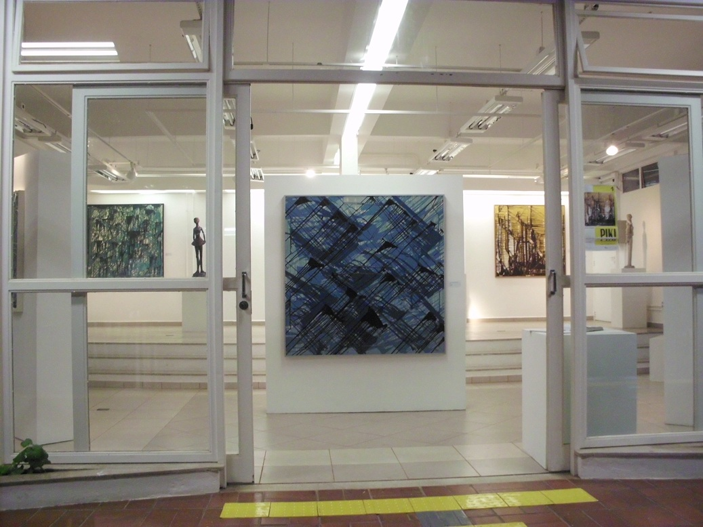
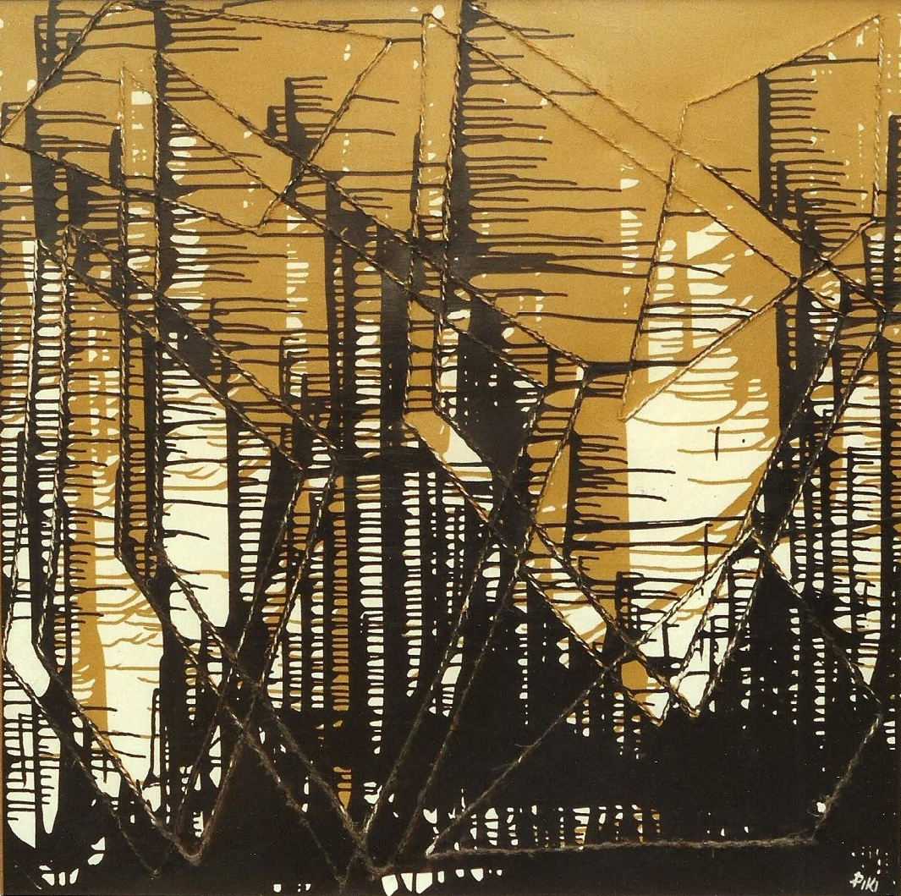
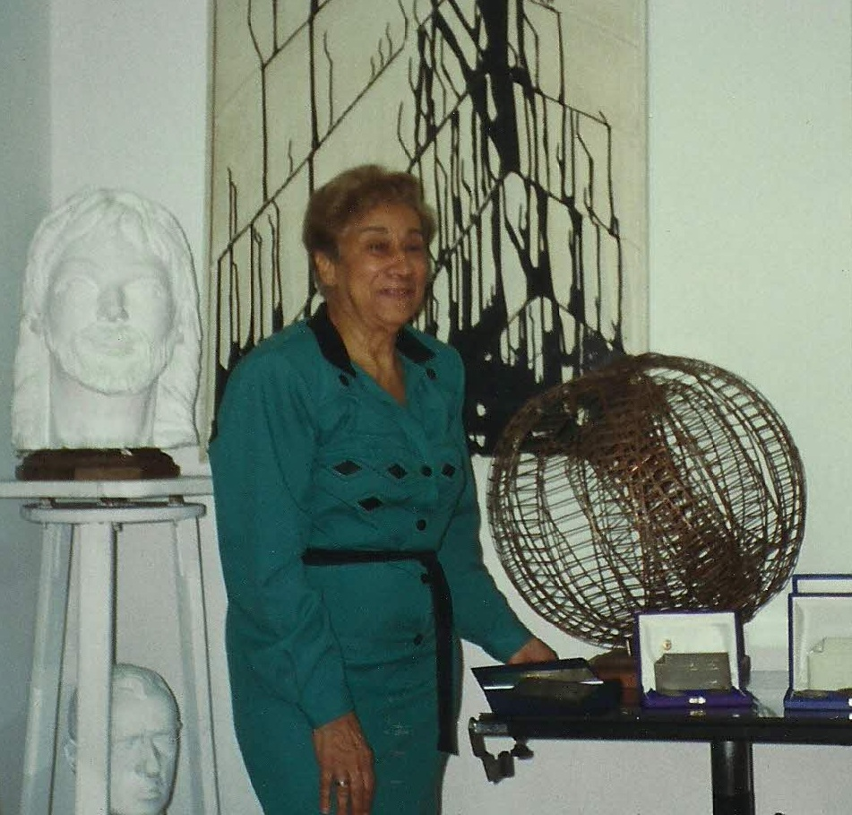

Acontece
A artista plástica Piki recebe homenagem nos
40 anos de Artes da PUC-Campinas

A Faculdade de Artes Visuais está comemorando os 40 anos de Artes na PUC-Campinas com uma série de eventos que se realizarão nesse segundo semestre de 2012. Com o mote “A arte de formar artistas” está acontecendo o primeiro evento dessa série com a mostra de “Pinturas e Esculturas” da artista plástica Maria Aparecida Bueno de Mello (1919-2009), conhecida pelo pseudônimo artístico Piki. A exposição estará aberta até 05 de outubro da Galeria de Arte da Faculdade de Artes Visuais da PUC-Campinas.
A abertura da mostra, inaugurada em 17 setembro, foi presidida pelo Prof. Flávio Shimoda, Diretor da Faculdade de Artes Visuais, contando com a palestra sobre a artista feita pelo Prof. Dr. Paulo Cheida Sans. As obras expostas são do Acervo do Museu Olho Latino e essa instituição cultural foi representada pela Diretora Adjunta Celina Carvalho. A sobrinha da artista, Carmen Sílvia Erbolato, representou os parentes e amigos recebendo a menção para a artista outorgada pela Faculdade de Artes Visuais. Entre os presentes estavam a artista Éden Franchi, amiga e colega da artista, e também o Diretor da Faculdade de Arte da PUC Peru, Prof. Alberto Agapito.

O curador da mostra, Paulo Cheida, diz que escolheu 16 obras para a exposição, sendo 09 pinturas, que representam parte da produção contemporânea da artista exposta na Bienal Nacional de São Paulo em 1976 e que alcançou grande repercussão na época, e uma pintura feita em pastel seco sobre papel, realizada no início de sua carreira nos anos 40, a qual retratou a sua mãe “Hilda”. Compondo a mostra também estão seis esculturas feitas em épocas distintas, representando a variedade de técnicas e materiais que a artista usava.
Piki foi aluna dos grandes artistas campineiros Lélio Coluccini e Thomaz Perina. Entre seus alunos de destaque está o artista plástico Francisco Biojone, que iniciou seus estudos em Artes com a artista.

Piki foi professora da disciplina Escultura no Curso de Educação Artística da PUC-Campinas desde a sua fundação, em 1972. Lecionou nesta instituição de ensino até meados da década de 90. Foi uma artista ativa e em 2008, um ano antes de falecer, expôs no Museu de Arte do Parlamento de São Paulo, cujo curador e crítico Emanuel von Lauenstein Massarani na ocasião disse: “o interesse da artista sempre foi pela fórmula: formas "cor" luz, todas móveis e vibrantes. Ao evidenciar o problema luminoso na linguagem expressiva do relevo pictórico e na visão de espaços oníricos e siderais ela encontra sua confluência”.
Vale conferir a qualidade das obras da artista. A exposição poderá ser visitada até 05 de outubro, de segunda a sexta-feira, das 19h às 21h na Galeria de Arte da Faculdade de Artes Visuais - Prédio H 7 – CLC - Campus I da PUC-Campinas – Rodovia “D. Pedro I” – Km 136. A realização da mostra é da Faculdade de Artes Visuais – CLC – PUC-Campinas e conta com o apoio do Museu Olho Latino.
Período da mostra: 17 de setembro a 05 de outubro de 2012.
Curadoria: Paulo Cheida Sans.
Local: Galeria de Arte da Faculdade de Artes Visuais.
Horário de visitação: de segunda a sexta-feira, das 19h às 21h. (Entrada gratuita).
Endereço: Prédio H 7 – CLC - Campus I da PUC-Campinas – Rodovia “D. Pedro I” – Km 136 – Campinas, SP.
Realização: Faculdade de Artes Visuais – CLC – PUC-Campinas.
Apoio: Museu Olho Latino.